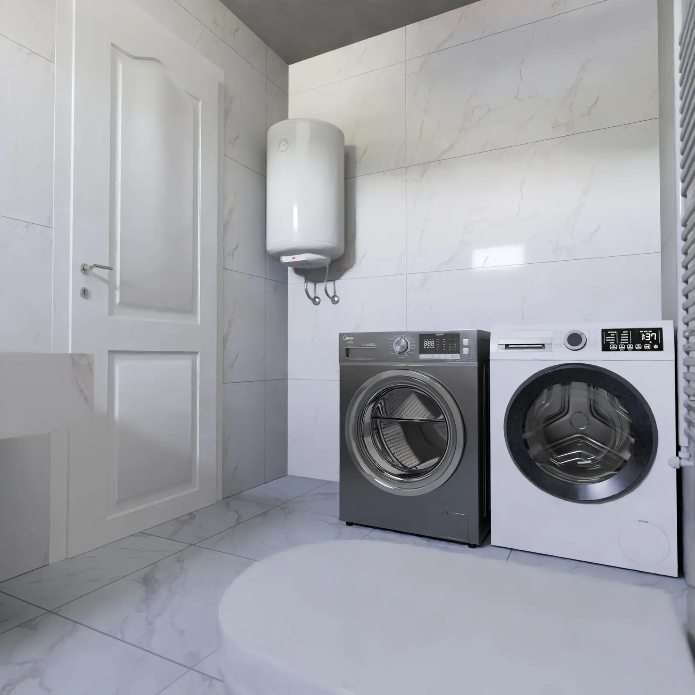
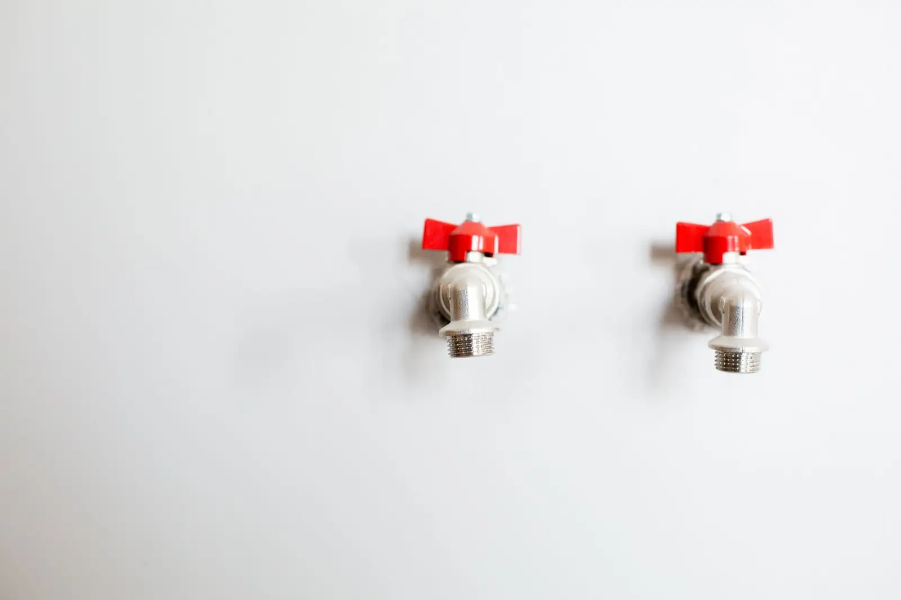

Leak detection and repair
Dripping fixtures, damp spots and pipe leaks, found and fixed.


Home / Services
Repairs, replacements and installations for homes and small businesses around Texarkana.
Sample service list for this concept mockup. Newton Plumbing Solutions has not confirmed which services it offers, and no prices are shown. Call 903-336-0507 to ask.
Dripping fixtures, damp spots and pipe leaks, found and fixed.




Tell us what is going on and we will tell you what to do next.